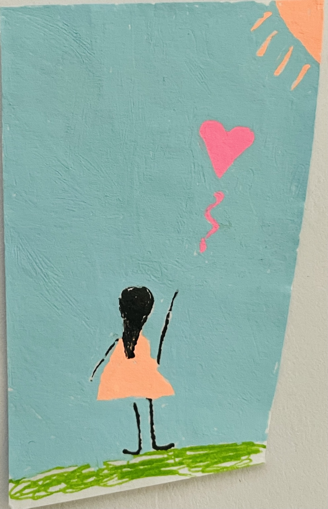
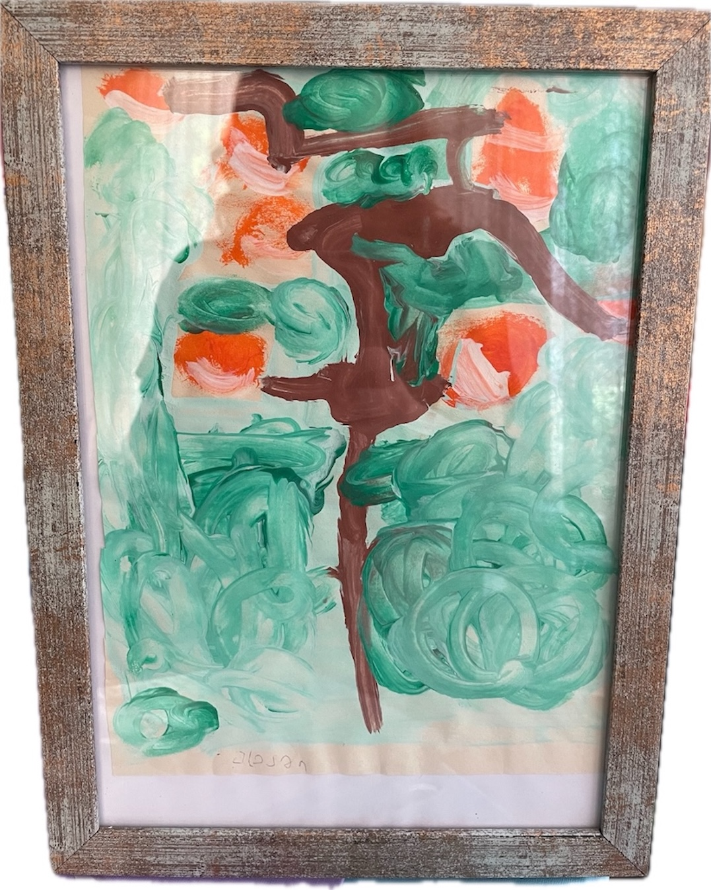
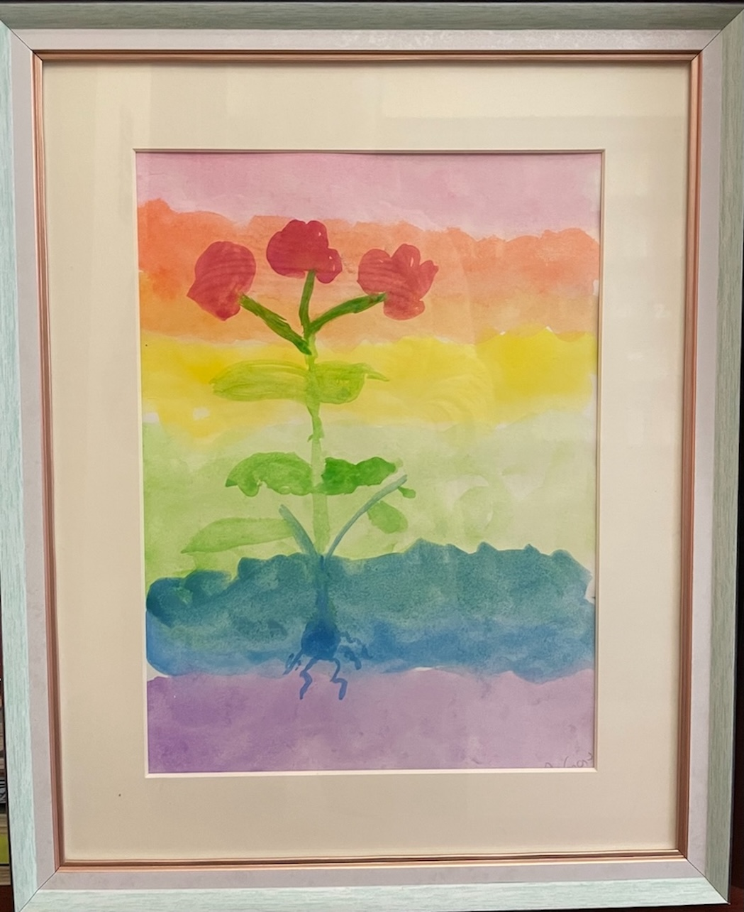
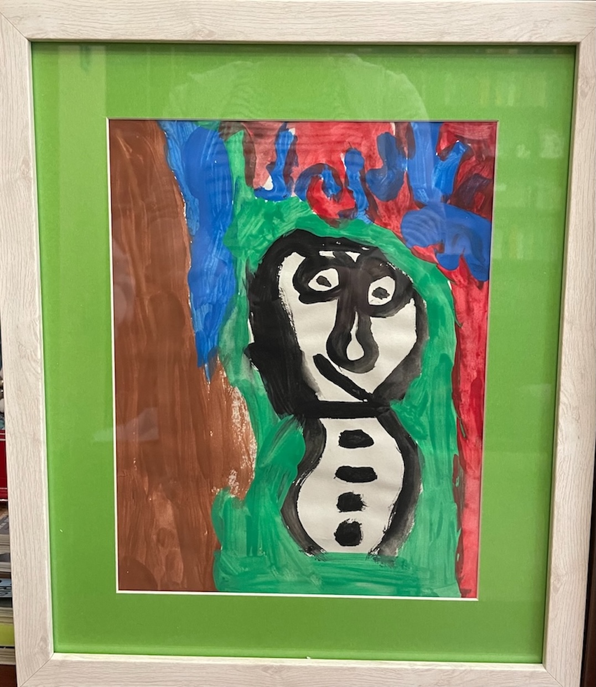
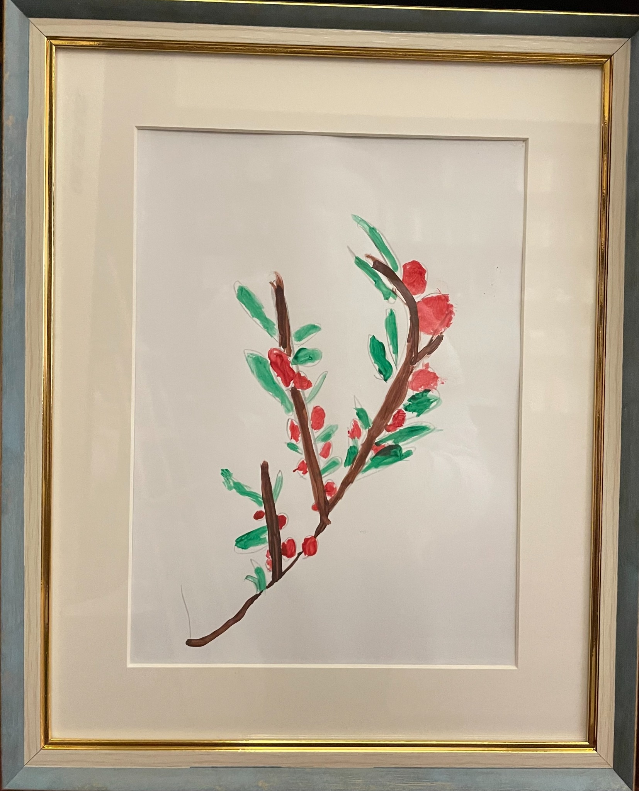

mARTa


girl with a balloon
This space is born from love, devotion, and an eternal bond. It is dedicated to my sweet, blissful, strong-minded, and deeply artistic daughter, Martha — eternally in our hearts, eternally unattainable, eternally 8 years old. She left behind a world of inspiration which lives on in every piece I create.
This space is born from love, devotion, and an eternal bond. It is dedicated to my sweet, blissful, strong-minded, and deeply artistic daughter, Martha — eternally in our hearts, eternally unattainable, eternally 8 years old. She left behind a world of inspiration which lives on in every piece I create.

Her sense of color, shape, and beauty ran deep. Her drawings, her crafts, her playful eye — all were inimitable.
Yet, with her spirit in mind, I dare and try.
This space isn’t about perfection, precision. It’s about imagination, communication, expression of joy and simple
forms that radiate warmth, color and comfort. It’s a little handmade world, simple and sincere, that speaks to
anyone who still carries that childlike sense of wonder.
Every piece in mARTa is crafted with care, heart, and a spark of childhood magic.

From Christmas trees in every shape and form, to vibrant flowers, to cute animals with playful details —
her legacy radiates in every handmade piece that now takes shape.

My hope is that these creations brighten your home and soul. That they connect you with the child you once were —
that they bring back laughter, memories, and a feeling of closeness and joy.
